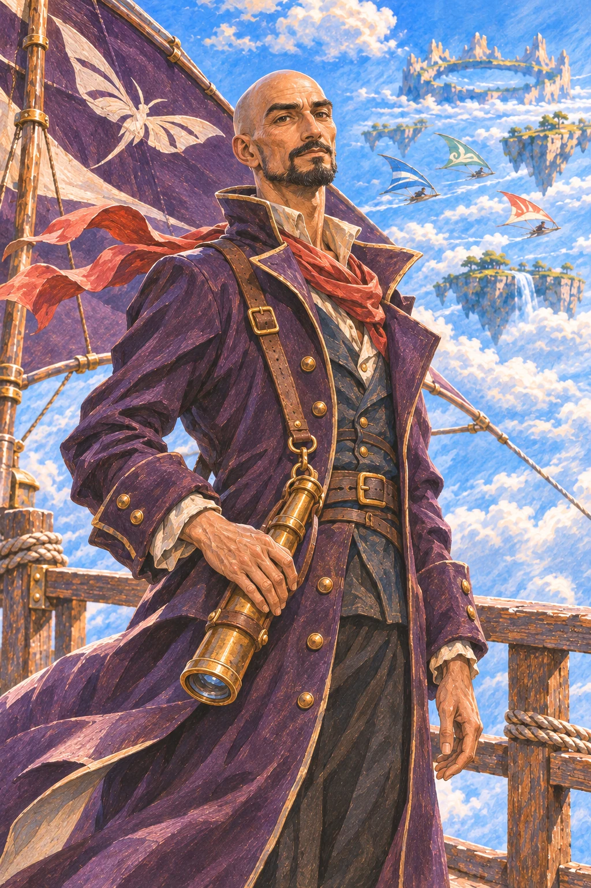

Найти внутренний проход горы, решить, что делать с протестами после развилки, и удержать судейскую баржу, когда её берут на абордаж.
Тобель ИстВеста РонГорран ТальДария Варр

Сарош ВедьСельва Прим
Если партия изменила план
Если экипаж минует судейскую баржу
Когда Веста бьёт тревогу, время останавливается для всех экипажей. Если герои пролетают мимо, спросите, кто из гонщиков остаётся помогать барже и кто видит уход команды. До снятия тревоги отметка шестого участка остаётся открытой. При следующей встрече Веста может выслушать свидетелей.
Повороты сюжета в этот вечер
Поворот: Песок под печатью
Кажется, что призовой сундук на судейской барже полон и стоит налёта. На деле Тобель растратил призовой резерв на свою неудачную экспедицию, опустошил сундук ещё до старта и запечатал его с песком внутри; печать датирована днём регистрации. Поэтому ему нужна победа Дарии: её приз зачтут в счёт долга ему самому.
В абордаже у Судейской террасы Горран Таль срывает с сундука крышку: серая мешковина и песок. «Пусто?! Песок! Кто-то обокрал меня раньше меня!» Веста, не выпуская журнал, читает дату на печати — день регистрации. Пусть стол сам сложит дату печати, долг Дарии и будущую поправку ветра. Тобель с террасы объявляет: «Нас ограбили. Сундук был полон».
После него: Растрата теперь видна всем, кто стоял на палубе, но рука, правившая знаки, ещё не названа: песок говорит о пустой кассе, а не о меле. Тобель понимает это и на последней стоянке предлагает «Стрижу» чистую доску в обмен на тишину.
Пустая вершина. Гора пуста, как перевёрнутый колокол, и внутри она гудит: каждое слово возвращается эхом с трёх сторон. Через три пролома в потолке падают столбы света, а между ними видно небо, которое почему-то оказывается и снизу. Вдоль внутренней стены тянутся узкие уступы, на них лежат лёгкие перья и серая пыль, и всё это медленно плывёт туда, куда тянет течение.
Судейская баржа стоит на каменном уступе. На доске на её корме ещё не высох белый мел пятого участка, и у кого-то в его столбце лишняя дюжина минут. Веста стирает тряпкой вчерашние цифры, и белая пыль сыплется ей на рукава. Ещё в Порту Гелий в тавернах шептались, что призовой сундук Обхода в этом году полон, как никогда, — и что облачные налётчики слышали это не хуже капитанов. Тобель Ист в свежих белых перчатках раскладывает на столе бланки протестов и ждёт, кто подойдёт первым.
Подготовка и роли
Поправки вечера 6 (норма 80). Проход −6/+4 (Сл 14), за пером без броска −4 (с грузом или без), обод 0; промер Сароша для обода — 0 или +1 (у «Моли» 84, потому что Сарош после сломанной мачты идёт внутри на ощупь). Брин с законом шва (У3) — преимущество. Штраф +5, только если на У5 правили знаки. Протест развилки — только с обломком у героев; обломок Сельвы ушёл к Фее и всплывёт у колокола финала. Отвод сейчас невозможен: правило 9 — только у колокола, и ленты решают лишь спорную строку. Вслух Веста: «Судью здесь не снимают. Ленты — у колокола. Правило девять». Тобель на обвинение отвечает процедурой; его настоящий ответ — сделка на вечере 7. Бой на барже обязателен и минут не стоит; погоня +6. Вся пыль на барже — белый табличный мел; перчатки Тобеля безупречно белые. Вслух: тройка лидеров, «Стриж», изменения, затем спорная строка.
Альта и Рута на кошках: кто отгоняет налётчика, кто рубит канат.
Лис и Брин — сундук, печать и журнал.
Искра — Горран: торговаться, крикнуть про пустой сундук или показать расчёт.
Яра — Веста: держать её рядом с журналом, пока налётчики тянутся к ней.
Сев (если есть) считает людей у кнехтов; Мея (если есть) записывает протесты стоянки.
Сцена 1 · 80 минут
Стоянка в полой горе
На широком каменном уступе внутри горы, как в гнезде, стоит судейская баржа: её швартовы привязаны прямо к выступам скалы, а фонари на корме отражаются в стенах тусклыми лунами. Звуки здесь возвращаются не сразу: стук тряпки по доске доносится трижды, с трёх сторон, и в последний раз совсем тихо. Пилоты говорят, что в полой горе нельзя шептать секреты: она всё равно перескажет их кому-нибудь в соседнем тоннеле. Экипажи швартуются вдоль уступа, кто-то передаёт соседям флягу с водой. Веста стирает старые цифры, оборачивается к вам и поднимает мел: «Участок пять. Записано».
Баржа «Ровный счёт» стоит на каменном уступе внутри горы. Веста стирает старые цифры: «Участок пять. Записано. Спорная строка: минуты, экипаж, знак. Диктуйте.» Если герои правили знаки, Тобель в свежих перчатках выводит под «Стрижом» «+5»: «Самовольная правка знаков Атласа. Пять минут, молодые люди, вам ещё повезло. Доска не умеет врать. На ней мел.» Дария читает строки у борта: «Штраф без пункта, судья. Я бы такой договор не подписала. Хотя подписывала и хуже.» Если на развилке кого-то обманули, обманутые капитаны стоят у борта и смотрят на «Стриж», а не на судью. Сарош, если его отозвали на У2 или выиграли у него пари, подходит сам: «Должок, осторожные. Промер Пустой вершины — мой, верный. Сам я там иду на ощупь: в прошлом году оставил в тоннеле мачту.» Тобель кивает: «Записано, молодые люди. Записать — ещё не значит согласиться.» Кто скажет вслух, что знаки правил судья, услышит Весту раньше Тобеля: «Судью здесь не снимают. Ленты — у колокола. Правило девять.» Тобель — ровно: «Обвинение — это протест. С вещью, под доску. Я запишу и его.» Веста открывает журнал: «Две записи. Обе его рукой. Я ничего не говорю — я показываю.» Дария напоследок: «Внутренний проход — для любителей мелкого шрифта. Я иду по внешнему ободу.» В боковом проломе перья и серую пыль тянет, как в трубу.
Выборы — и что будет дальше
Опротестовать штраф за правку знаков с обломком (в спорную строку) — или промолчать.
Штраф за правку знаков опротестовывают с обломком в руке: три вмятины от зажима ложатся на стол рядом с медным мелодержателем судьи. Строка уходит под доску — спорной. Тобель кивает ровно: «Записано, молодые люди. Записать — ещё не значит согласиться». Промолчать — значит оставить пять минут на доске без оговорок, и тогда на последней стоянке судья предложит снять их за отказ от протестов.
Подать протест о развилке за обманутых — только если у героев есть обломок (садились у пятого столба).
Протест о развилке подают за тех, кого обманули знаки: «Ёрш», «Сойку», «Перья» — или всех шестерых. С обломком их двенадцать минут встают в спорную строку. Обманутые капитаны стоят у борта и смотрят на «Стриж», а не на судью. Гальт вынимает трубку изо рта: «За медь заступились. Запомню». Такие строки у колокола становятся лентами.
Обвинить судью вслух сейчас: Веста ответит правилом девять, Тобель — процедурой, а на вечере 7 предложит сделку.
Судью обвиняют вслух, при всех. Веста отвечает раньше Тобеля: «Судью здесь не снимают. Ленты — у колокола. Правило девять». Тобель — ровно, не меняя голоса: «Обвинение — это протест. С вещью, под доску. Я запишу и его». Ничего не меняется сразу. Но теперь он знает, что «Стриж» знает, и на террасе придёт с предложением, которое трудно назвать подкупом.
Попросить журнал: вторая запись видна целиком.
Веста открывает журнал: «Две записи. Обе его рукой. Я ничего не говорю — я показываю». Первая — ночь перед вторым участком, «для проверки». Вторая — ночь перед пятым, тем же почерком. Ящик знакового мела вскрывал только Т. Ист. Две ночи, две ложные линии, одна рука. Дария, если она рядом, читает через плечо и молчит дольше обычного.
Промерить внутренний проход пером и пылью — или договориться о промере с Сарошем для внешнего обода.
Внутренний проход меряют пером и серой пылью: в боковом проломе их тянет, как в трубу, и видно, куда идёт поток. Или берут промер Сароша — даром, если он должен, или за минуту, пропустив «Моль» в тоннель первой. Сарош, отдавая лист: «Промер верный. Сам я там иду на ощупь: в прошлом году оставил в тоннеле мачту». Подведённым он не отдаст ничего.
Если белый пакет Дарии ещё цел, попросить её вскрыть расчёт.
Дария держит белый пакет в руках, взвешивая. Если её просят честно, она ломает печать при экипаже и читает расчёт награды до запятой. На последней строке она замолкает: победитель вписан заранее — она сама. «Победитель назван до второго участка? Если меня купили заранее, я верну покупку». С этой минуты её лента у колокола может подняться против кредитора.
Проверка и путь без броска
Мудрость (Выживание) или Интеллект (Магия) Сл 14 — вести «Стриж» внутренним проходом: успех −6 на У6, провал +4 (эскиз всё равно составлен). Без броска: бросить тяжёлый груз — или лететь налегке, если груза нет, — и идти за пером: −4. Внешний обод — 0. Эскиз («Эскиз внутри горы») — тем, кто промерил проход. Для обода промер даёт Сарош: даром, если на У2 его отозвали ракетой или он проиграл пари; иначе за минуту — пропустить «Моль» первой в тоннель (+1); подведённым на развилке — никак. Протест развилки — только с обломком у героев. Журнал — «Страница журнала выдачи мела (вторая запись)», без броска.
Если не получилось
При провале «Стриж» выносит в соседний тоннель: +4 на У6, но перо показало верный пролом, эскиз составлен. Если протест или обвинение прозвучали без вещи, Тобель записывает пустой протест: +2 героям, в спорную строку это уйдёт, только если вещь найдётся позже.
Сцена 2 · 90 минут
Абордаж «Ровного счёта»
Пустая вершина остаётся за кормой, и впереди, у швартовых кнехтов Судейской террасы, видна баржа «Ровный счёт». Рядом с ней, борт к борту, качается чужой бриг под парусами из разноцветных заплат, и с него уже летят три кошки: одна цепляет нос баржи, другая мачту, третья корму. По канатам перебегают люди с тесаками. На палубе баржи, в облаке белой меловой пыли, стоит высокий человек в кожаном плаще из лоскутов чужих парусов, с абордажным крюком на плече; про таких в Разломе говорят, что груз они берут, а людей без нужды не трогают. Над баржей часто бьёт тревожный колокол, и голос Весты перекрывает ветер: «Время стоит!»
Внутренним проходом «Стриж» идёт за пером по узким уступам, ободом — по открытому ветру; у пар свои эпизоды. У швартовых кнехтов Судейской террасы стоит баржа, а бриг «Сорока» уже бросил три кошки: у носа, у мачты, у кормы. У каждой — налётчик с тесаком. Веста бьёт в тревожный колокол: «Время стоит! Все слышали? Стоит, пока я не скажу!» Тобель стоит на верхней ступени террасы и вниз не спускается. На палубе, в белой меловой пыли, — Горран Таль, плащ из лоскутов чужих парусов, свисток у губ. «Сундук и тишина — вот и вся торговля, господа гонщики.» Если на вечере 4 вы отдали путевой лист: «Спасибо за карту, господа!» — и он сразу идёт к сундуку. Начинается бой «Абордаж „Ровного счёта“»: перерубить кошки, защитить Весту, доску и журнал. В конце первого раунда — или сразу, как кто-то крикнет, что сундук пуст, — Горран срывает крышку. «Пусто?! Песок! Кто-то обокрал меня раньше меня!» Налётчики бросают кошки и тянутся к Весте. Она не выпускает журнал: «Дата печати — день регистрации. Записываю. Время стоит!» Во втором раунде к корме причаливает «Кречет»: Дария и два матроса встают перед доской. Потеряв половину хитов, Горран свистит: «Я не воюю за пустой ящик. Отцепляйте, ребята.» Если пакет унесли на отмели, Горран швыряет расчёт на палубу: «Ваш расчёт — пустышка!» На террасу поднимается Тобель: «Нас ограбили. Сундук был полон.»
Выборы — и что будет дальше
Рубить кошки: сначала отогнать налётчика у каната, потом два успеха на кошку.
Кошки брига держат баржу у носа, у мачты, у кормы, и у каждой налётчик с тесаком. Экипаж отгоняет налётчика от каната, потом рубит — дважды, трижды, пока трос не лопнет. Каждая перерубленная кошка — баржа на шаг ближе к свободе, а журнал Весты — ближе к целому. Горран свистит и смеётся: «Сундук и тишина — вот и вся торговля, господа гонщики!»
Крикнуть, что сундук пуст, — Горран откроет его сразу; после песка, когда он потерял треть хитов, показать расчёт награды — он свистит отход в тот же ход.
Кто-то кричит через палубу, что сундук пуст. Горран не верит — и срывает крышку сразу. Внутри серая мешковина и песок. «Пусто?! Песок! Кто-то обокрал меня раньше меня!» Если показать ему расчёт награды, когда налётчики уже потрёпаны, он понимает всё и свистит отход: «Я не воюю за пустой ящик». Веста, не выпуская журнал: «Дата печати — день регистрации. Записываю».
Отбить Весту и журнал после песка, когда налётчики бросят кошки.
После песка налётчики бросают кошки и тянутся к Весте, будто журнал стоит больше сундука. Экипаж встаёт между ними и толстой книгой в меловой пыли. Веста не выпускает журнал из рук: «Время стоит! Все слышали? Стоит, пока я не скажу!» Сохранить её и журнал — значит сохранить обе записи вскрытия ящика. Без них правда останется только в памяти.
Если к концу пятого раунда хоть одна кошка цела: погнаться за баржей (+6) или отпустить её (0).
Одна кошка цела, и бриг тащит баржу прочь от террасы. Погнаться — шесть минут потерь, зато Веста, доска и журнал спасены. Отпустить — ни минуты, но журнал за бортом, доска смазана, и Весте придётся восстанавливать её по копии хранителя доски и по памяти. Хранитель доски сжимает свою копию: «Я всё записал. Карандашом, но всё». Выбор между минутами и правдой.
Эпизод «ветер» (перелёт): сквозняк в тоннеле или на ободе рвёт парус вбок — Мудрость (Внимательность) Сл 12: −1.
В тоннеле или на ободе сквозняк рвёт парус вбок, будто гора выдыхает. Пара ветра ловит этот выдох и разворачивает парус по нему, а не против. Получилось — минута выигрыша на перелёте к террасе. Нет — ничего не теряют, только парус хлопает громче. Наблюдатель слушает гул из пролома: «Гора дышит. Дышим вместе с ней — и летим».
Эпизод «снасти» (перелёт): уступ задевает киль — Ловкость или инструменты Сл 12; провал — ошибка снастей, +3 (запасной парус отменяет).
Узкий уступ тоннеля задевает киль, и «Стриж» вздрагивает всем корпусом; что-то трещит в креплении. Пара снастей проверяет и закрепляет на ходу, пока гора не прижала планер снова. Справились — перелёт чист. Нет — ошибка снастей и три минуты, если нет запасного паруса. Такелажник постукивает по килю: «Целый. Пока целый, и до террасы дотянет».
Эпизод «соседи» (перелёт): с обода видно, что у кнехтов террасы чужой бриг — Мудрость (Внимательность) Сл 12: герои подходят к барже и начинают бой первыми.
С обода видно то, чего не видно из тоннеля: у кнехтов Судейской террасы стоит чужой бриг с заплатанными парусами. Пара соседей замечает его раньше, чем Веста бьёт в тревожный колокол. «Стриж» подходит к барже с той стороны, откуда налётчики не ждут, и бьёт первым. Наблюдатель шепчет: «„Сорока“. Это „Сорока“. Они за сундуком».
Проверка и путь без броска
Кошка: пока у неё стоит налётчик, канат не перерубить; без него — два успешных действия Сила (Атлетика) или Ловкость (Акробатика) Сл 12. Два героя у одной кошки могут дать оба успеха за раунд. Сундук без проверки: Горран открывает его в конце первого раунда или по крику. Расчёт, показанный после песка, когда Горран потерял треть хитов, ускоряет отход, но не отменяет боя: встреча обязательна. Где кто: Тобель на верхней ступени террасы, Дария со второго раунда у доски, Веста с журналом у мачты. Время боя не считается; погоня +6. Противники: Горран и три налётчика при шести игроках, Горран и четыре — при семи и восьми.
Если не получилось
Если к концу пятого раунда хоть одна кошка цела, «Сорока» тянет баржу прочь. Погнались — +6, Веста, доска и журнал спасены. Отпустили — 0: к вечеру 7 налётчики бросают пустую баржу у террасы и отпускают Весту, журнал за бортом, мел на доске смазан. Веста восстанавливает доску по копии хранителя доски и своей памяти, спорную строку — по памяти, и подписывает обе записи журнала. Если герои пали, Горран, увидев песок, уходит сам.
Сквозняк внутри горы
В каменном углублении у стены горы скопились лёгкие перья и серая пыль. Они не лежат спокойно: пыль ползёт тонкой струйкой, перья подрагивают, и всё медленно тянет в узкий боковой пролом, откуда пахнет холодом.
Что можно установить
Внутренний проход короче внешнего обода и продолжается вниз до нижней дуги Кольца Короны. Эта нижняя связь даёт −3 минуты на последнем отрезке финала. Путь честный и открыт любому экипажу, кто его измерит; выигрыш не гарантирован.
Получение
Пустить перо или щепоть пыли и пройти за ней вдоль пролома; сделать эскиз.
Запасной путь
Кто идёт внешним ободом, может взять промер у Сароша Ведя: он прошёл проход в прошлом году и молчал о нём. Даром, если на У2 его отозвали ракетой; иначе за минуту — пропустить «Моль» первой в тоннель (+1).
Песок под печатью
Окованный медью призовой сундук стоит на палубе баржи у кнехтов. Судейская печать на нём сломана, но ещё держится на шнуре, крышка откинута, и по доскам вокруг рассыпано что-то серое и сухое.
Что можно установить
Внутри мешки с песком в судейской серой мешковине. Печать Тобеля датирована днём регистрации: сундук был пуст ещё до старта. Растрата подтверждается вещью, а не словом.
Получение
Заглянуть в сундук во время боя или после; Горран сам кричит на всю палубу: «Песок!»
Запасной путь
Веста записывает в журнал, что видела песок, и подтверждает дату печати на любой вопрос.
Журнал выдачи мела
На столе диспетчера баржи «Ровный счёт» лежит толстая книга в белой меловой пыли. Переплёт перетянут шнуром с печатью коллегии, страницы расчерчены по линейке, и под каждой записью стоит аккуратная подпись Весты.
Что можно установить
Ящик знакового мела вскрывал только Т. Ист, с пометкой «для проверки», — в ночь перед вторым участком. Маршалы свои ящики сдали и опечатали накануне первого колокола.
Получение
Попросить журнал у Весты: любой капитан вправе его видеть, это правило памятки. Она показывает страницу без броска. При первом чтении дайте лист «Страница журнала выдачи мела». Когда состоялось второе вскрытие, дайте обновлённую страницу при следующем осмотре или передаче выписки.
Запасной путь
Если журнал потерян, Веста диктует и подписывает записи, которые успела сделать ко времени разговора.
Победитель до финиша
Белый капитанский пакет на поясе у Дарии: красная судейская печать на нём нетронута, бумага чуть обтрёпана по краям, а внутри прощупывается сложенный вдвое плотный лист.
Что можно установить
Внутри расчёт награды с пометкой «вскрыть при вручении»: победителем уже назван «Белый Кречет», исполнение — зачётом в долг Т. Исту, «наличной выдачи не производить». Расчёт составлен до второго участка: победителя назвали заранее. Дария вскрывает пакет при героях и не знала его содержимого.
Получение
Вернуть пакет Дарии в бою у Стеклянной отмели или попросить её вскрыть его позже, на вечерах 5–7. Она вскрывает сама и даёт прочесть.
Запасной путь
Если пакет унесли налётчики, Горран на барже швыряет его на палубу: «Ваш расчёт — пустышка: денег по нему не выдают».
Изменения после решений
Если Баржу удержали: все три кошки перерублены или Горран ушёл сам → Журнал и Веста целы; на вечере 7 Веста покажет обе записи любому капитану.
Если Не удержали и не погнались → Журнал за бортом, доска смазана: Веста восстанавливает её по копии игроков и памяти, спорную строку — по памяти, и подписывает копию журнала. Путь к мелу через журнал сохраняется.
Если Погнались за баржей → Героям +6 на У6, зато Веста, доска и журнал спасены.
Если Герои правили знаки и не опротестовали штраф с обломком → Штраф +5 стоит на доске без спорной записи; на вечере 7 Тобель предложит снять его за отказ от протестов.
Выдать в нужный момент
Эскиз внутри горы — Вечер 6: после промера внутреннего прохода Пустой вершины; для тех, кто шёл внешним ободом, — промер Сароша Ведя (даром, если на У2 его отозвали ракетой, иначе за минуту).
Страница журнала выдачи мела (вторая запись) — С вечера 5: любому капитану, кто попросит журнал после ночи перед пятым участком; на вечере 6 Веста показывает сама. Если журнал потерян при абордаже — копия по памяти, подписанная Вестой.
Расчёт награды — Вечер 4 после боя или торга, если пакет вернулся и Дария вскрыла его при героях; иначе вечера 5–7 по её согласию, либо Горран швырнул пакет на палубу в вечере 6.
Завершение вечера
Тобель поднимается на террасу и объявляет: «Нас ограбили. Сундук был полон. Всё, что здесь пропало, пропало у коллегии». Веста смотрит на дату на печати и ничего не отвечает. На палубе — песок в серой мешковине и белая меловая пыль, и ветер с облачного океана медленно разносит её по доскам. Пусть хранитель доски назовёт отставание «Стрижа» после шестого участка. Стряхивая песок с белой перчатки, Тобель задерживает взгляд на «Стриже», будто хочет что-то предложить, но пока молчит.